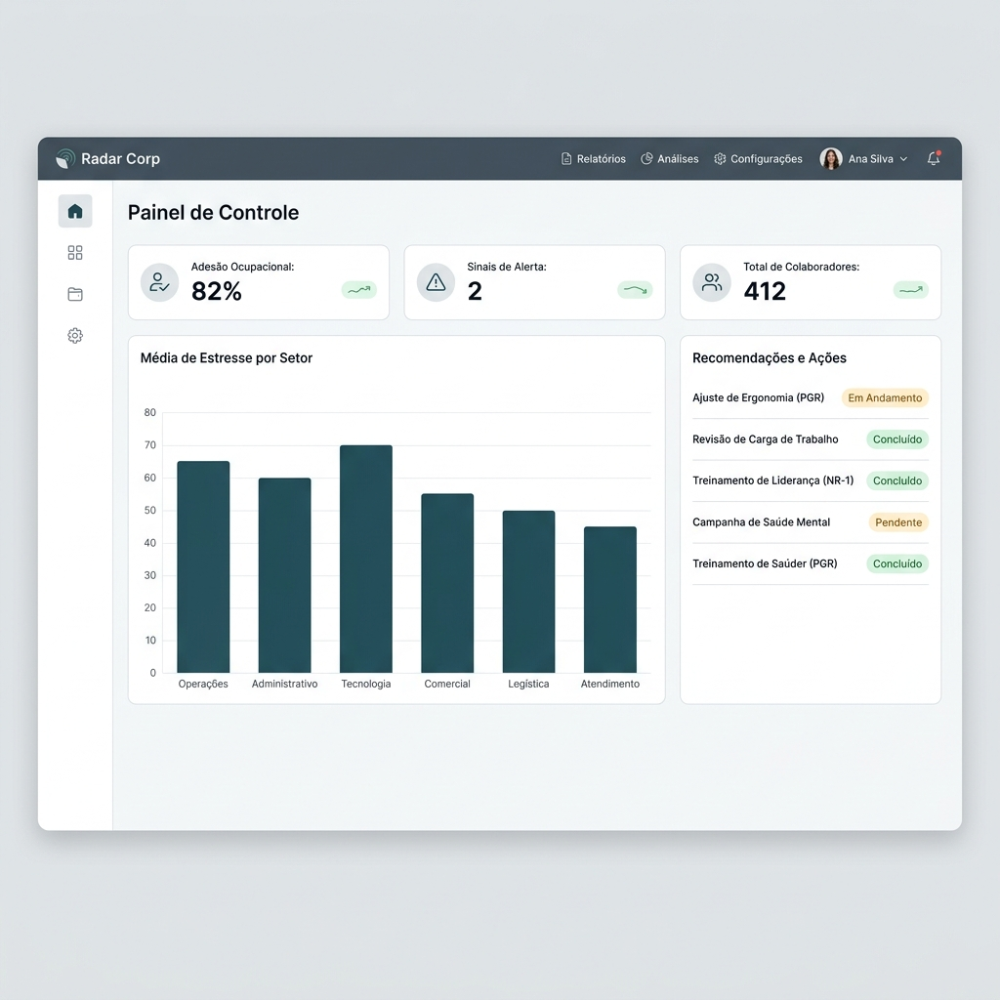

A Radar Corp transforma check-ins com colaboradores em sinais organizacionais, indicadores por setor e relatórios gerenciais para apoiar RH, SST e diretoria.
1. WhatsApp
Check-ins rápidos com colaboradores
2. Inteligência Artificial
Classificação automática de sinais
3. Indicadores
Visão consolidada por setor
4. Relatórios
Apoio à decisão e documentação
1. Resposta
Colaborador responde pelo WhatsApp
2. Classificação
IA organiza e anonimiza sinais
3. Indicadores
RH e SST veem riscos por setor
4. Ação
Gestão age antes do risco crescer
Veja a simplicidade da jornada do colaborador no WhatsApp unida ao poder analítico e de compliance do Painel Gerencial corporativo.
Escuta Ocupacional de Alta Adesão
Uma conversa natural, voluntária e anônima de 2 minutos. O colaborador responde sem precisar baixar aplicativos ou criar logins complexos.
Indicadores Estruturados por Setor e Período
Visão consolidada para RH e SST. Acompanhe a média de estresse, tendências de engajamento voluntário e dados agregados respeitando os requisitos da LGPD.

* Imagens reais de simulação da interface da plataforma. O fluxo final de perguntas e os agrupamentos de setores são personalizados conforme o porte e necessidade da sua organização.
Para pequenas empresas que precisam se preparar para a NR-1 sem criar uma estrutura pesada ou onerosa de RH e SST.
Para empresas em crescimento que precisam enxergar de antemão sinais de sobrecarga, conflitos e falhas de comunicação por setores específicos.
Para empresas com múltiplas áreas, filiais ou unidades que necessitam estruturar uma rotina de escuta robusta com dados consolidados e rastreabilidade total.
A Radar Corp ajuda o RH a acompanhar sinais estruturados de sobrecarga, clareza de função, suporte social e percepção de apoio por setores.
Organize os sinais de estressores psicossociais ligados à organização do trabalho em relatórios estatísticos consistentes para apoiar seu PGR e GRO.
Monitore tendências humanas de exposição operacional com um painel consolidador objetivo por setor, unidade e período de campanhas.
Nossos consultores acompanham toda a jornada de implantação e ativação da Radar Corp na sua organização.
Configuramos os grupos de trabalho, setores operacionais e unidades geográficas para consolidação adequada dos dados.
Desenho e parametrização da trilha conversacional contendo perguntas objetivas sobre clima e sobrecarga no trabalho.
Os depoimentos dos colaboradores são analisados de forma voluntária e consolidada por modelos de inteligência artificial de leitura anônima.
Geração periódica de relatórios estatísticos consolidados demonstrando a percepção de riscos de estresse e sobrecarga.
Diretrizes e insights estratégicos para guiar intervenções de melhorias baseadas nas maiores dores organizacionais reveladas pelo painel.
Alinhamento estratégico final com a nossa equipe de especialistas corporativos para apresentação e discussão dos indicadores de clima.
A Radar Corp estrutura uma rotina robusta de escuta ocupacional com Inteligência Artificial, dados consolidados e relatórios gerenciais automáticos. A solução ideal para empresas que buscam agir com antecedência, compreender seus principais pontos de atenção e construir uma base organizada para ações preventivas de SST.
A nova redação da NR-1 trouxe mais atenção à gestão de fatores psicossociais relacionados ao trabalho. Empresas que começarem antes terão mais tempo para estruturar e organizar seus processos preventivos.
A Radar Corp atua como uma ferramenta de suporte tecnológico operacional que apoia o processo de conformidade do GRO/PGR. Por meio dela, a gestão pode identificar perigos potenciais, monitorar as percepções de sobrecarga e clima, e documentar as evidências históricas de acompanhamento de forma anônima e segura.
Aviso Importante
Esta solução serve de apoio operacional à gestão e não substitui os pareceres, exames médicos ou laudos periciais dos profissionais técnicos habilitados de SST da sua empresa.
Visão estatística por setor
Adesão Voluntária
81%
Setores Mapeados
6
Pontos de Atenção
2
Sem trocar de sistema, sem complexidade e sem aplicativo novo. Proteja sua equipe coletando feedbacks voluntários via WhatsApp e consolide seus indicadores de riscos psicossociais.
Radar Corp — Gestão Preventiva Sob Demanda